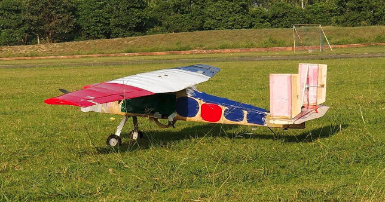
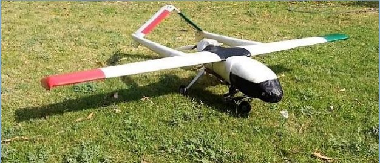
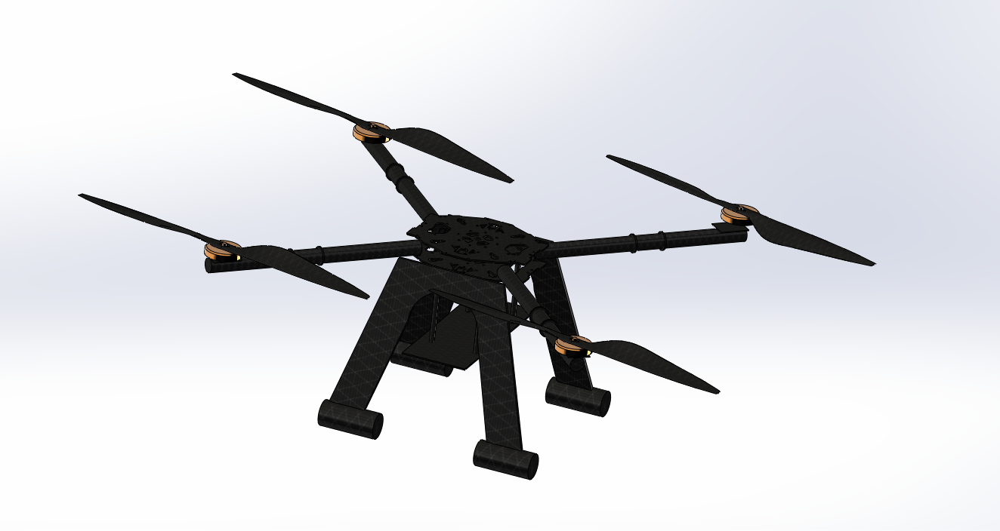

Team Unmanned Aerial Systems
Delhi Technological University
UAS-DTU is a team of undergraduate students of Delhi Technological University, devoted to developing indigenous technological solutions for UAVs. The team had a rich history by being the first technical team in India to be fully funded by Lockheed Martin, one of the largest defense aircraft manufacturers. We have also received projects to develop UAVs, Aarush X-1, and Aarush X-2 from
Lockheed Martin. Our Ultimate Goal is to reduce India's reliance on COTS products and foreign UAVs. Focusing on humanitarian uses of UAVs, we are developing a new generation of low-cost systems to aid in Surveillance and Reconnaissance. Moreover, we have been performing well in national and international level competitions (SAE ADC & AUVSI SUAS) and that too, with good ranks. In the team, I was responsible for designing and fabrication of new airframes along with maintenance of existing airframes and ensuring execution of plans within the time limit.
Projects
-
Avniel, Team UAS-DTU's Airframe for SAE Aero Design Challenge Southern Section 2017
- Designed and Fabricated a new Airframe with my team UAS-DTU, having a tested MTOW of 7.95 kgs with an empty weight of 4.5 kgs. It was primarily made up of Balsa wood and Birch wood.
- Performed FSI analysis of the Airframe. CFD was used to determine aerodynamic loads using ANSYS Fluent and Structural Analysis was performed to test the airframe structure.
- The work done led to save MTOW by 1.2 kgs and thus bringing the weight under prescribed limits.
Fig. Avniel in ready to fly configuration
-
Lazarus, Team UAS-DTU Airframe for AUVSI SUAS 2017
- Lazarus, designed to meet the objectives of AUVSI student UAS competition. Capable of following dynamically changing way points, Lazarus provides real time reconnaissance to an Imagery terminal on ground using a gimbal stabilized point and shoot camera. Modular in design, Lazarus can be brought to flying state in less than 40 minutes.
- RMRC Anaconda, an RTF was used as a base airframe and modifications were made to make it suitable for the mission.
- A Gimbal was designed and fabricated from aluminium which can fit up to any mobile phone in market and that can be used as the primary camera and blur free flight images can be received in real time via ftp server.
- Payload Drop Mechanism was designed and fabricated with 3mm Birch Wood and Carbon fibre to drop payload with high accuracy.
Fig. Lazarus in ready to fly configuration
-
Xarush, Team UAS-DTU Multi Rotor for DRDO ARDB Flytron: UAV Design and Flying Competition
- A Quadcopter with wheelbase of 650mm was designed and fabricated from carbon fiber which was laminated and cured in-house having a payload capacity of 1.5 kgs and GTOW of 2.5 kgs.
- The quadcopter is Capable of flying fully autonomous and differentiating terrorist and soldiers on ground and also capable of dropping light payload on ground.
Fig. CAD Model of Xarush